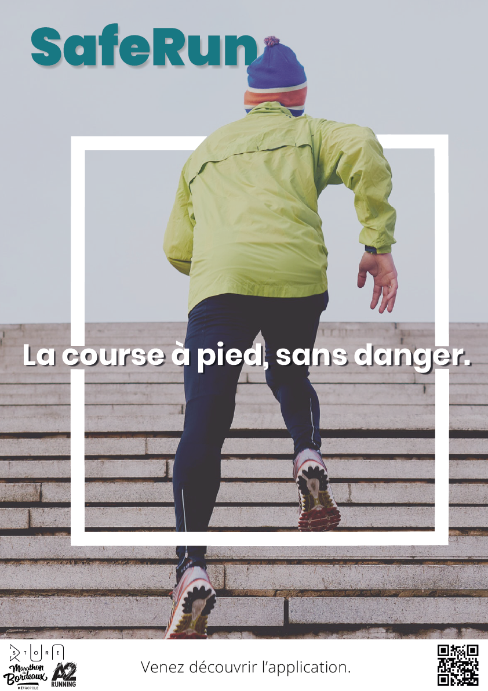
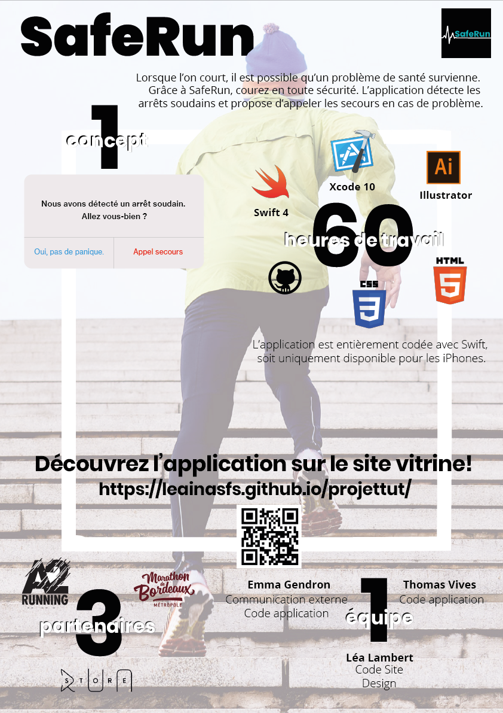
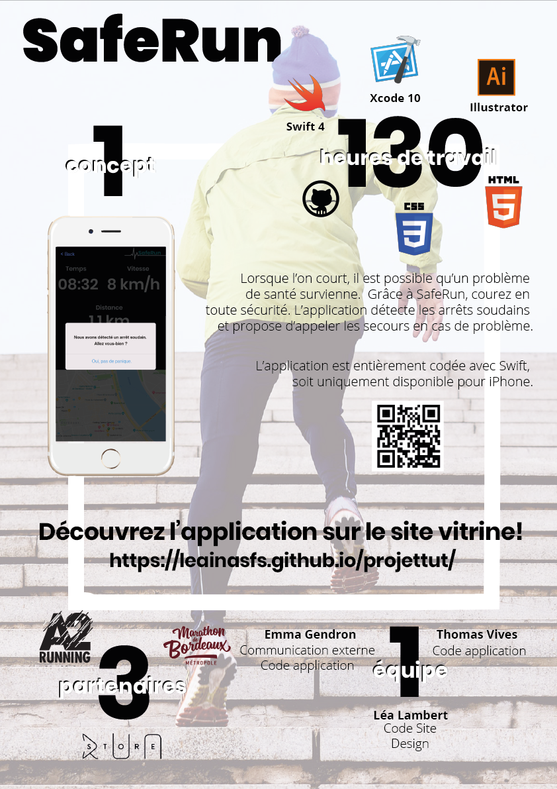

Notre projet.
SafeRun est une application développée pour les joggeurs leur permettant d'envoyer un appel aux secours en cas d'arrêt soudain ou de problème.
En savoir plus
Quelques mots-clés.
Jogging, Running, Entrainement, Course, Santé, Secours, Sport, application swift, xcode, swift, map, carte, tracking, urgence, iOs, App Store...
Partenaires envisagés.
Nous avions comme idée de créer un partenariat avec différents magasins de running locaux, comme :
Mais également viser un média différent en envisageant un partenariat avec le marathon de Bordeaux
Partenaires officiels.
Après contact de plus de 8 partenaires potentiels, nous avons donc comme partenaires officiels de l'application :
Compétences visées sur votre cv / pers.
Nous souhaitons dans un premier temps développer plusieurs qualités qui nous semblent indispensables à avoir dans la vie professionnelle, que nous pourrions ainsi valoriser sur notre CV.
Il s'agit ici de l'auto-organisation, du développement web et développement mobile, du travail de groupe, du partage des tâches, de la rigueur, de l'écoute et de l'adaptation. On pourrait spécifiquement ajouter le fait que l'on débute sur Swift, que l'on maîtrise HTML CSS, Illustrator, que nous valorisons le travail d'équipe, et que nous nous axons beaucoup sur la communication.
Critères de réussite du projet (Version 0 les choses indispensables, V1, V2…)
V0 du projet
Une application de running qui, lorsqu'elle détecte que le coureur n'est plus en mouvement, affichera une alerte pour s'assurer que le coureur va bien.
V1 du projet
En plus de l'alerte affichée, si le coureur ne réagit pas, l'application proposera d'appeler les secours.
V2 du projet
En plus des fonctions de la V1, le coureur peut voir à la fin de son run sa vitesse, la distance, le temps et le parcours de la course effectuée.
V3 du projet
En plus des fonctionnalités de la V2, le coureur peut bénéficier du suivi de sa course en direct.
Pistes d'amélioration
En plus des fonctionnalités de la V3, si le coureur ne va pas bien, l'application enverra une requête à un site qui se chargera d'appeler automatiquement les secours.
Avancée du projet : semaine à l'IUT.
Lundi 07 Janvier 2019
- Thomas : Dans le but de faire un développement optimal et des plus propres, je me suis documenté sur la technologie Swift et ses différentes possibilités notamment concernant la position GPS. Suite à cela j'ai commencé à développer l'application en respectant l'ordre de priorité des fonctionnalités.
- Emma : Dans le cadre d’une recherche de partenaires, j’ai commencé par rédiger et envoyer un mail présentant le concept de SafeRun ainsi que la concrétisation du projet par une telle collaboration. J’ai également contribué à la finalisation du parcours utilisateur, pertinent et semblable à celui d’app running courante.
- Léa : J'ai dans un premier temps passé quelques heures sur la recherches de différents tutoriels Swift (comment accéder aux données gps, l'accéléromètre, slapshscreen, changer icone de l'app...). Puis j'ai également aidé Thomas dans le code, surtout lors des bugs. Enfin, j'ai réalié un premier jet du poster premièrement en A3, ainsi qu'un premier jet des maquettes. J'ai également réalisé un premier exemple de SlpashScreen avec Emma.
Mardi 08 Janvier 2019
- Thomas : J'ai continué de développer l'application en suivant l'ordre des priorités, j'ai commencé par faire en sorte d'obtenir les données les plus importantes comme la distance, la vitesse, le temps ainsi que la carte GPS qui nous localise aux bonnes coordonnées. J'ai commencé les recherches concernant le suivi en direct.
- Emma : Un partenaire a répondu à la demande que nous lui avions transmise. J’ai donc pris contact avec le responsable de la structure Run Store qui a accepté de bien vouloir nous soutenir dans ce projet. J'ai aussi installé Xcode sur mon Mac personnel afin de pouvoir continuer le code chez moi. J'ai commencé à refléchir à un nouveau logo. La journée s’est terminée par un travail en groupe sur le code du tracking en temps réel de la course.
- Léa : Aujourd'hui, j'ai continué d'aider Thomas dans le code. J'ai également recherché comment faire des Alertes iOs avec Swift, puis comment faire apparaître une alerte selon une action autres que 'OnClick'. J'ai également modifié le brouillon du poster (passant d'A3 à 2 posters A2). Le poster publicitaire est terminé, il ne manque plus que le poster pédagogique. En fin de journée, j'ai - avec le reste de l'équipe - participé à la recherche des solutions à tous les problèmes que nous rencontrions avec Xcode. J'ai aussi designé le splashscreen final.
Mercredi 09 Janvier 2019
- Thomas : J'ai aidé Emma à régler certains soucis concernant l'application. Ces problèmes étaient en partie dûs à la version de Swift.
- Emma : J'ai pu tester l'application directement sur mon téléphone, et relever quelques problèmes. J'ai pu observer que le tracking fonctionnait, mais avec quelques bugs. J'ai changé quelques éléments graphiques de l'application. J'ai encore changé l'icone de l'application. J'ai aussi téléchargé le QR Code qui relie au site vitrine.
- Léa : J'ai pu continuer à updater le site web de notre projet, et faire l'affiche A3 destinée à l'équipe pédagogique. J'ai également modifié la première affiche pour la rendre plus commerciale. J'ai enfin rajouté sur le site un tutoriel de comment personnaliser son splashscreen sur Xcode.

Jeudi 10 Janvier 2019
- Thomas et Emma : Nous avons effectué des tests sur le tracking. Nous avons réglé des soucis dans le view controller. Le tracking est donc fini et fonctionne.
- Léa : J'ai recommencé l'affiche destinée à l'équipe pédagogique afin qu'elle soit moins assommante. J'ai updaté le site, ainsi qu'ajouté le Business Model. J'ai changé le moodboard car nos inspirations ont légèrement changé. J'ai fini toutes les maquettes et les ai intégrées dans des mockups.

Vendredi 11 Janvier 2019
- Thomas et Emma: Nous avons travaillé sur l'alerte, ainsi que sur l'appel aux secours.
- Léa : J'ai officiellement terminé l'affiche destinée à l'équipe pédagogique. J'ai updaté le site, ainsi qu'ajouté la dernière maquette manquante. J'ai changé le design de l'application. J'ai également réalisé la vidéo publicitaire avec PremierePro que j'ai postée sur YouTube.
